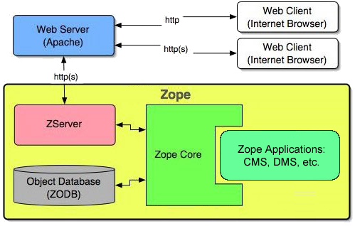
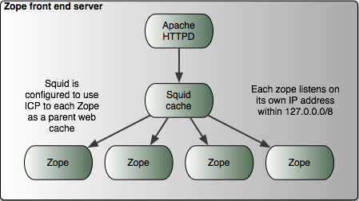
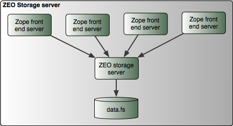
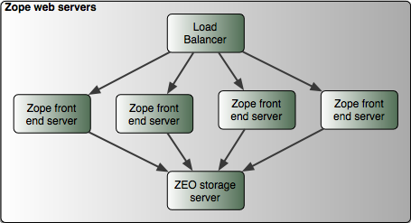
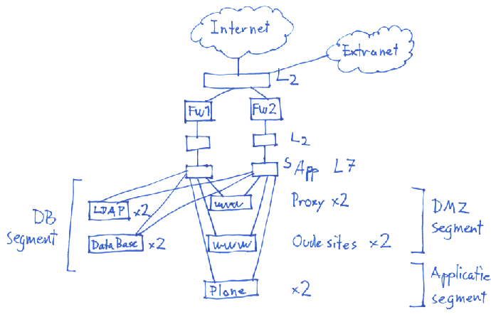

|
|
|
Gebruikersdag in AmsterdamZope Schaalbaarheid 19 september 2007, AmsterdamKit BlakeAgendaBasic principles of (Zope) hosting and clusters University of Bedfordshire example Case: Zope/Plone at the Ministry of Flanders in Brussels MMIS Plone infrastructure Packaging ETH Zürich example IntroductionZope is one of the most scalable web application servers on the market Augmented Zope-based systems can do thousands of requests per second Scalability: first step is caching of data Zope should be concentrating on logic, not pumping data Let other applications do the work Product Names (open source)
Zope aloneThis laptop is running Zope Most development is done ‘locally’, as in localhost Zope alone is perfectly fine for small sites Peak access times determine when to scale up Zope and ApacheIn most setups Apache is used for the webserver Apache is robust and proven software Apache serves more than half of the world’s websites ‘Name-based virtual hosting’ allows Apache to serve many sites Apache enables secure setups using encryption (using SSL, Secure Sockets Layer) The Zope Application Server
Credit: Zope Corporation Zope, Apache, and Squid
Credit: The Fnord Portal ZEO (Zope Enterprise Objects)
Credit: The Fnord Portal ZEO cluster with Load Balancer
Credit: The Fnord Portal Plone Infrastructure for Mass HostingThe Ministry of Flanders – Department of Environment, Nature, and Energy (LNE) Legacy at MMIS (Milieu Management Informatiesysteem): an old CMS that doesn’t scale Plone matched the requirements almost completely Plone has local and international support and a vibrant community 50+ websites using various technologies Plone setupOne Plone root contains all sites and central resources Sites container: a container for all the sites Site folder: the root of the site, with configuration Virtual hosts are mapped in Apache rewrite rules Central resourcesLDAP for authentication Skins/stylesheets Functional products (e.g. PloneformGen, etc). Some sites are multilingual, using the LinguaPlone product InfrastructurePlone runs in a ZEO cluster with 4 nodes Apache as webserver Squid for caching Pound for load balancing Infrastructure diagram
Site customizationSome sites have custom skins, using a base skin product Sites can have a colors css in Zope, editable by a manager Certain sites have an integration with an Informix database Search is configurable for only local or local/global search The migration brings various small web applications into Plone Content type handlingUsing default content types as much as possible Sites can have restricted content types via a CT folder Only specific content types are available Setup by the administrator in portal tools Products in usePloneFormGen PloneForArtistsCalendar A few modules contain custom Products Later the generic custom products will be released as open source PackagingAll code is stored in a source code repository (svn: Subversion) ZEO nodes are installed using a ‘buildout’ script Installs (almost) everything: Zope, Plone, products, etc. Some dependencies must be setup manually: LDAP, db adapter, etc. Developers use the same buildout to install on a local machine Large clusterAt ETH Zürich (Swiss Federal Institute of Technology) Questions?Thank youAnd thanks to the Zope/Plone communities |